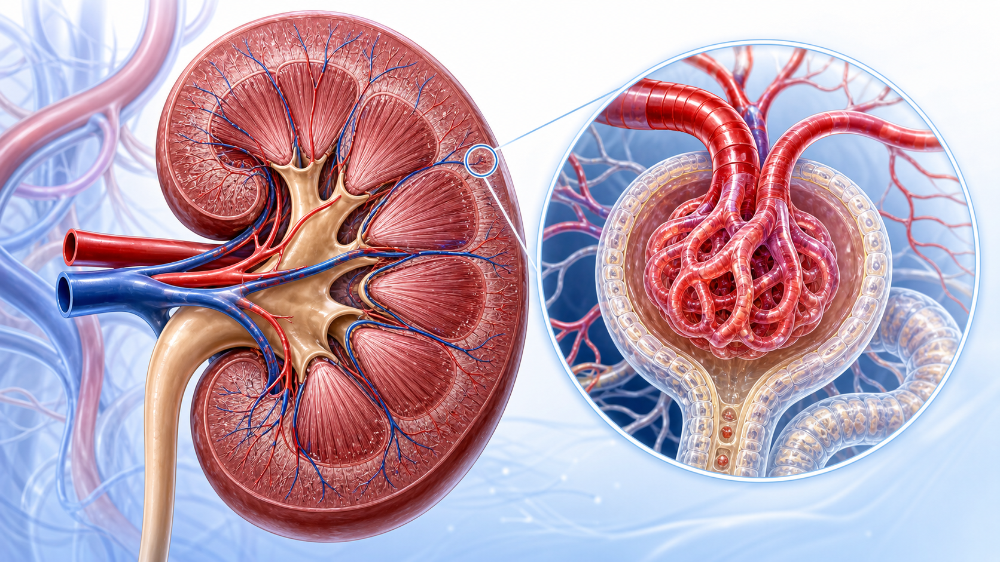
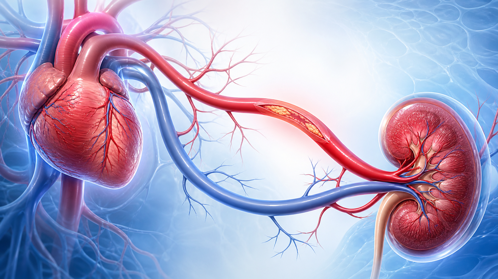
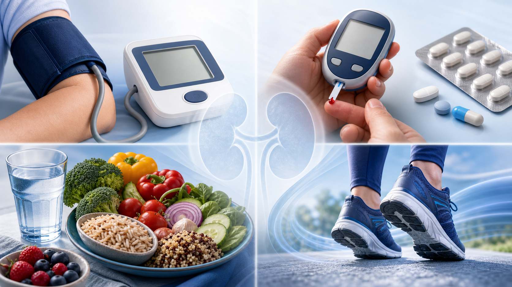

콩팥 기능 저하(eGFR <60) 또는 콩팥 손상(단백뇨·알부민뇨 등)이 3개월 이상 지속되면 만성콩팥병입니다.
콩팥은 노폐물·여분의 물·전해질을 걸러 소변으로 내보내고, 혈압·빈혈·뼈 건강에도 관여하는 장기입니다. 기능이 천천히 떨어져도 한동안은 증상이 거의 없어, 혈액검사(eGFR, 거르는 기능)와 소변검사(단백/알부민)로 확인합니다. 진행하면 부종·피로·야간뇨·가려움 같은 증상이 나타날 수 있습니다.

콩팥 단면 사구체 · 네프론
콩팥이 나빠질수록 심근경색·뇌졸중 위험이 함께 오릅니다 — 콩팥병은 곧 혈관병이기도 합니다.
많은 환자에서 콩팥은 한 번 진행하면 천천히, 그러나 꾸준히 나빠집니다. 그래서 목표는 진행 속도를 늦추는 것입니다. 동시에 알부민뇨가 많을수록 심혈관 사건 위험이 커지므로, 콩팥 보호 치료가 곧 심장 보호로도 이어집니다. 일찍 발견해 혈압·혈당·약물을 챙기면 투석까지 가는 시간을 크게 늦출 수 있습니다.

콩팥 심장
혈압 조절
혈압을 목표 범위로 낮춥니다. 단백뇨가 있으면 ACEi/ARB가 콩팥을 함께 보호합니다.

혈당 조절 + SGLT2 억제제
SGLT2 억제제는 당뇨 유무와 무관하게 단백뇨성 CKD에서 콩팥·심장을 보호해 권고됩니다.
단백뇨 줄이기
소변으로 새는 단백(알부민)을 줄이면 진행이 느려집니다. uACR로 효과를 추적합니다.
심혈관 위험 함께 관리
콜레스테롤·금연·체중까지 챙겨 심근경색·뇌졸중을 함께 예방합니다.

혈압 · 혈당 약 · 생활습관소염진통제(NSAID) 남용 금지
자주·고용량 복용은 콩팥에 부담. 진통제가 필요하면 종류·용량을 의사와 정하세요.
조영제·한약·고용량 건강식품 주의
CT 조영제, 일부 한약·고용량 보충제는 콩팥에 부담. 검사·복용 전 콩팥병을 알리세요.

모든 약은 콩팥기능에 맞춰
감기약·영양제 포함 새 약을 시작할 땐 미리 알리세요. 용량 조절이 필요할 수 있습니다.

합병증은 정기 검사로
빈혈·뼈(인·칼슘)·고칼륨·산증은 증상 전에 검사로 잡아 식이·약으로 관리합니다.